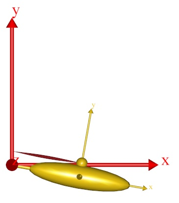

Lesson 2: Controlling Muscle Drawing¶
Muscles can be displayed in a variety of fashions depending on the specifications in the AnyDrawMuscle object. Let us take a look at its definition again:
AnyDrawMuscle drw = {};
It obviously does not contain much, so every setting is at its default value leading to the following display of the muscle:

Let us play around with the settings a bit. An easy way to display all the settings is to discard our manually defined AnyDrawMuscle object and insert a template from the class tree instead:
Erase the previous AnyDrawMuscle, right-click the AnyDrawMuscle in the tree view, and insert an instance:
AnyViaPointMuscle Muscle1 = {
AnyMuscleModel &Model = .SimpleModel;
AnyRefFrame &Orig = .GlobalRef.M1Origin;
AnyRefFrame &Ins = .Arm.M1Insertion;
AnyDrawMuscle drw = {
//Visible = On;
//Opacity = 1.0;
//Pickable = On;
//RGB = {0.5546875, 0.1015625, 0.1171875};
//Transparency = 1.0;
//DrawOnOff = 1.0;
//Bulging = 0.0;
//ColorScale = 0.0;
//RGBColorScale = {0.95703125, 0.78515625, 0.78515625};
//MaxStress = 250000.0;
//DrawScaleOnOff = Off;
/*DrawScale =
{
EnableCreasing = Off;
CreasingAngle = 0.524;
EnableWireframe = Off;
EnableSmoothing = On;
Param = 0.0;
ParamArray = ;
RGBArray = ;
OpacityArray = ;
};*/
//AnyStyleDrawMaterial &<Insert name0> = <Insert object reference (or full object definition)>; You can make any number of these objects!
};
};
Notice that the <ObjectName> must be manually changed to drw (or any other sensible name). The commented lines (with // in front) are the optional settings. Un-commenting them will not change much because the values they have listed are the default settings. So we need to change some of the values.
The first thing we shall try is to make the muscle bulge. We do this by setting the value of the Bulge variable to 1. What this translates to is to make the muscle bulging proportional to the force in the muscle:
AnyDrawMuscle drw = {
//RGB = {0.554688, 0.101563, 0.117188};
//Opacity = 1.000000;
//DrawOnOff = 1.000000;
Bulging = 1;
//ColorScale = 0.000000;
//RGBColorScale = {0.957031, 0.785156, 0.785156};
//MaxStress = 250000.000000;
};
When you try this, you will find that the muscle has become thinner, but you really cannot see it bulge much. The problem is that the thickness of the muscle is scaled by another factor in addition to the force. This enables the system to create nice visualizations for intensive and light exercises alike. The additional factor is the variable MaxStress. The following will increase the muscle thickness:
AnyDrawMuscle drw = {
//RGB = {0.554688, 0.101563, 0.117188};
//Opacity = 1.000000;
//DrawOnOff = 1.000000;
Bulging = 1;
//ColorScale = 0.000000;
//RGBColorScale = {0.957031, 0.785156, 0.785156};
MaxStress = 2500;
};
Why does a smaller value of MaxStress lead to a thicker muscle? Well, you can think of the force in a muscle as being the product of a tissue stress and the cross sectional area. So, the smaller the tissue stress, the larger the cross sectional area for a given force. Thus, reducing the value of MaxStress increases the muscle thickness. If you reload and run the inverse dynamic analysis you will see that the muscle now has a significant thickness. Its thickness does not change much over the movement, though. This is because the muscle force is nearly constant over time for the problem we have defined. If we let the joint flex a bit more, then the moment arm of the muscle will become progressively smaller, and we will get a larger muscle force. The easy way to accomplish this is to increase the angular velocity of the joint driver:
// Drive the revolute joint at constant velocity
AnyKinEqSimpleDriver Drv = {
DriverPos = {-10*pi/180};
DriverVel = {80*pi/180};
AnyRevoluteJoint &Jnt = .Jnt;
Reaction.Type = {0};
};
Reload the model and run the InverseDynamicAnalysis operation again. You will see that the arm now flexes up to an almost vertical position. If you plot the muscle force, Fm, again in a chart view, then you can see how the muscle force goes up drastically with the reduced moment arm:
Consequently the muscle now bulges more towards the end of the movement than it does in the beginning:
The muscle thickness does not have to reflect force. Choosing other values for the Bulging property will give other results:
Bulging value |
Effect |
Comment |
|---|---|---|
0 |
No bulging |
This is the default value |
1 |
Muscle force |
Thickness is proportional to force |
2 |
Muscle strength |
Constant in this case (but relevant for more advanced muscle models) |
3 |
Muscle activity |
The ratio between muscle force and muscle strength |
4 |
Constant volume |
The muscle gets thicker when it contracts |
Muscle state can also be visualized with color. This allows for using bulging to visualize the force, while, for instance, muscle activity can be visualized with color. Try the following:
AnyDrawMuscle drw = {
//RGB = {0.554688, 0.101563, 0.117188};
//Opacity = 1.000000;
//DrawOnOff = 1.000000;
Bulging = 1;
ColorScale = 1;
//RGBColorScale = {0.957031, 0.785156, 0.785156};
MaxStress = 2500;
};
When you reload and run the InverseDynamicAnalysis, you will notice that the red shade of the muscle changes as its activity grows:
When the activity is zero, the color defaults to a rather pale red. You can control this “initial” value of the scaled color through the property RGBColorscale. As the activity grows towards 1, the color approaches the default value of the muscle given in the RGB property. For instance, if you want the color interpolated from a cold blue to a warm red as the muscle activity increases, you can use the following settings:
AnyDrawMuscle drw = {
RGB = {1, 0, 0}; //Red
//Opacity = 1.000000;
//DrawOnOff = 1.000000;
Bulging = 1;
ColorScale = 1;
RGBColorScale = {0, 0, 1}; //Blue
MaxStress = 2500;
};
Finally, the muscle drawing object has a couple of properties in common with other drawing objects: You can control the transparency of the object through the property of that name. Opacity = 1 means opaque, and with Opacity = 0, the object becomes completely invisible. All values in between causes the object to be semi-transparent. You can also turn of the display of the object entirely off by setting DrawOnOff = 0;
See also
Next lesson: Lesson 3: Via-point Muscles.
 Fix it your self
Fix it your self